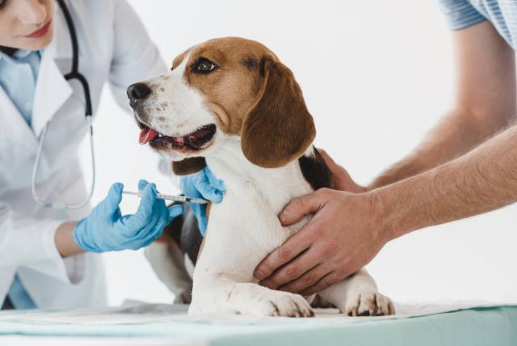

Consultas médicas:
Exámenes de salud regulares, diagnósticos y tratamientos para una variedad de enfermedades y afecciones.

Vacunación:
Administración de vacunas importantes para prevenir enfermedades comunes en perros, gatos y otras mascotas.